Исправлены оси рулей направления и крепление щитков основных колёс. Убрано независимое смещение щитка вниз: теперь он и его кронштейн жёстко связаны с узлом колеса, а закрывающая нишу панель работает отдельно. Перестроены семь створок в тонкие замкнутые панели без перекрывающихся заплат.
Кили сопоставлены с присланной схемой Су-30СМ и инструкцией Звезда7314 (C18/C26); щитки/створки — с D19/D20 и B18/B19. Высота и нейтральный контур килей сохранены: оснований произвольно сужать их по этим материалам нет. Исправлена наклонная ось шарнира руля. Схема и модельная инструкция не заменяют заводские рабочие чертежи; кинематика шасси остаётся игровой реконструкцией.
Кадры сняты в игре. Для осмотра днища самолёт перевёрнут к солнцу; это не изменение посадки. Сглаживание выключено. Камера, фонарь, сопла и остальные самолёты сохранены из теста4. Проверены полный цикл G, Z/C/X, девять положений отдельных узлов шасси. Это адресные проверки, не доказательство отсутствия всех дефектов.
Инструкция Су-30СМ Звезда7314 · Проверки и SHA · Размеры шарниров/панелей · Проверка Windows32
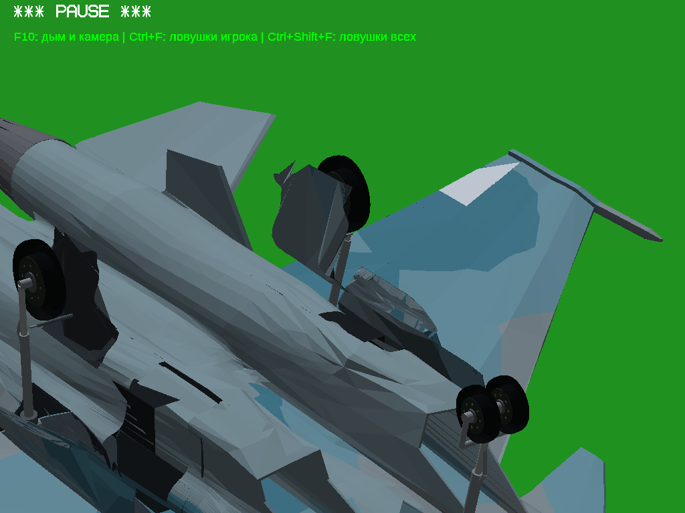
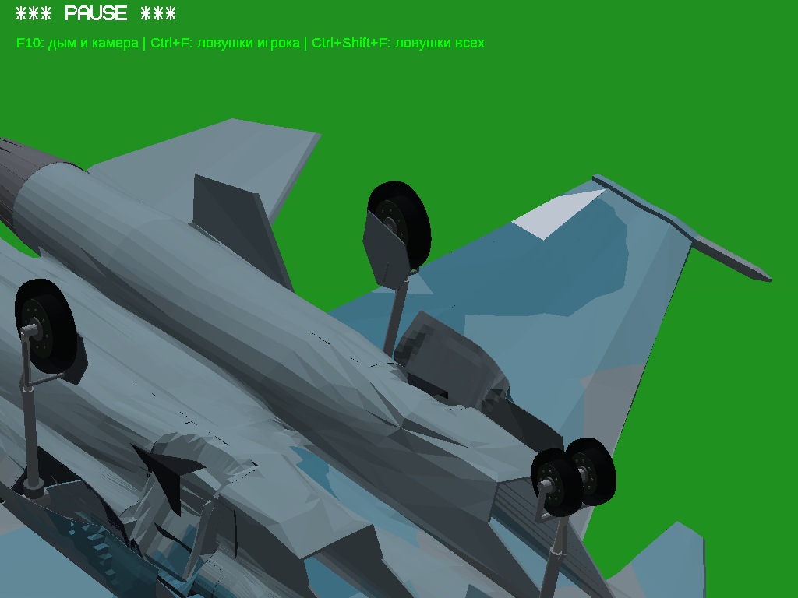
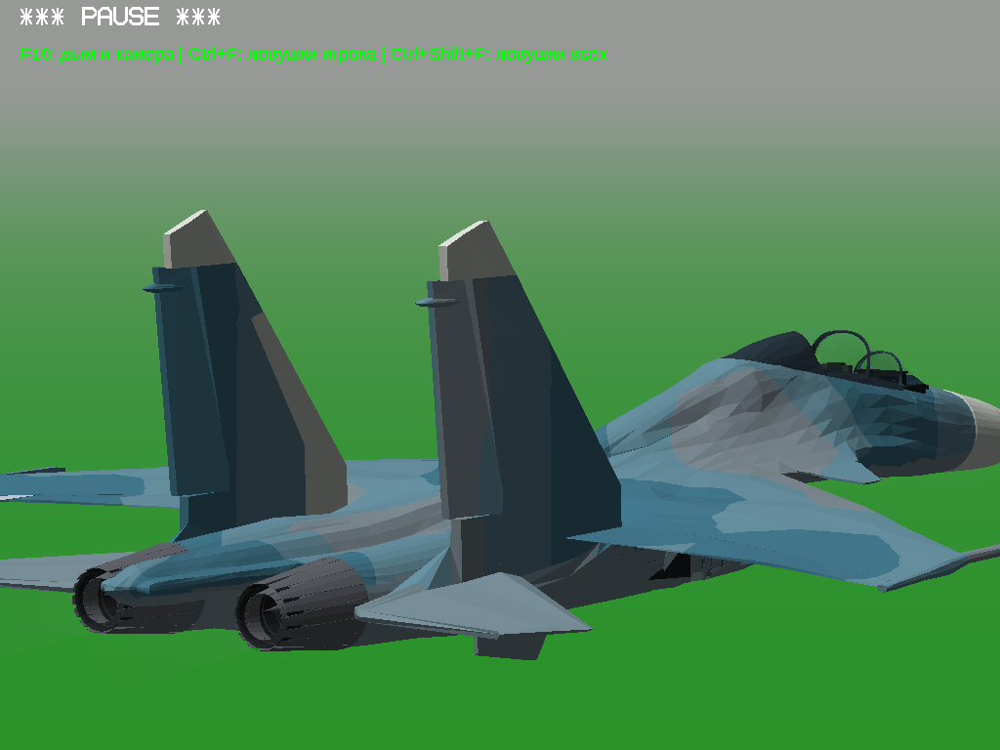
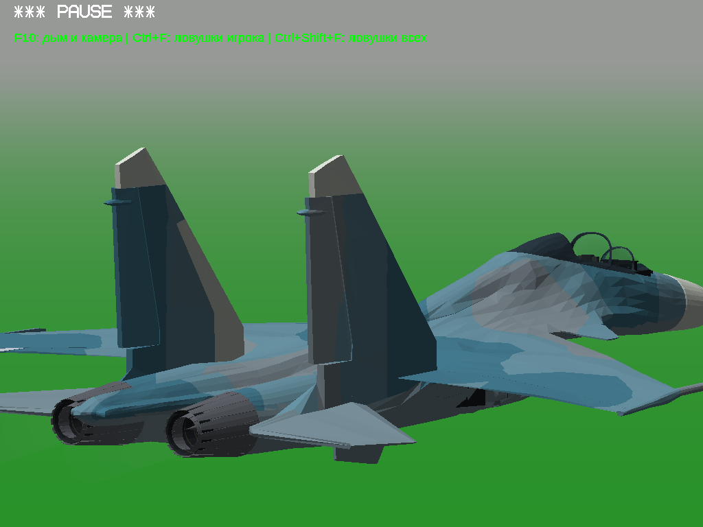
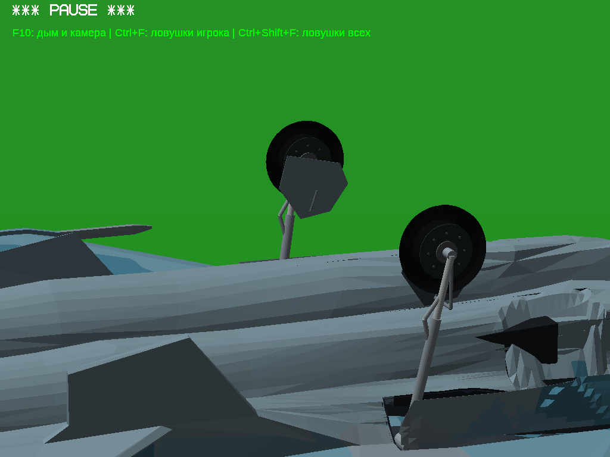
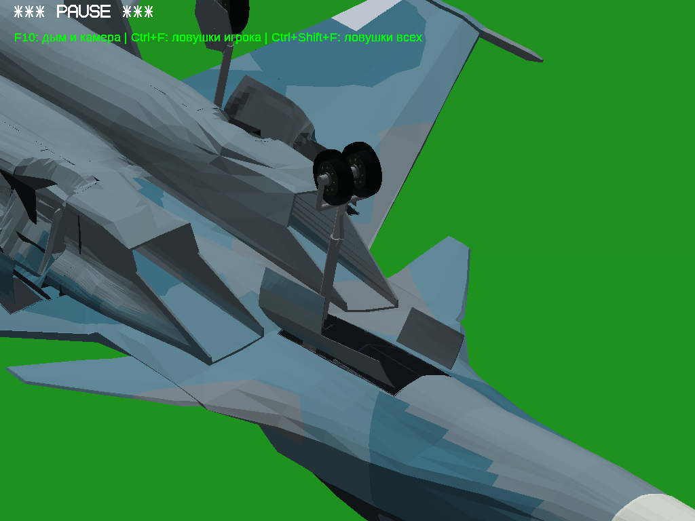
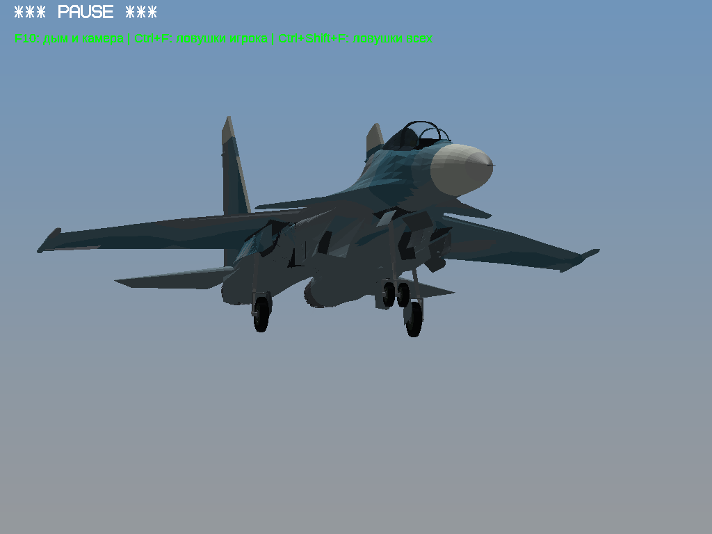
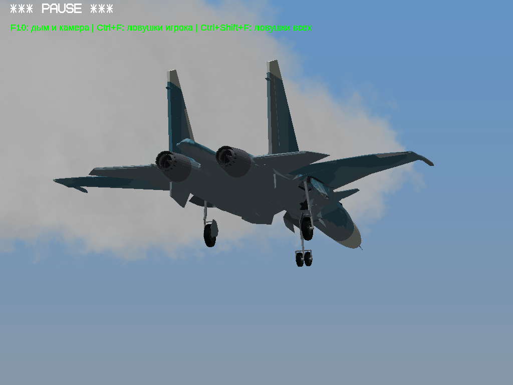
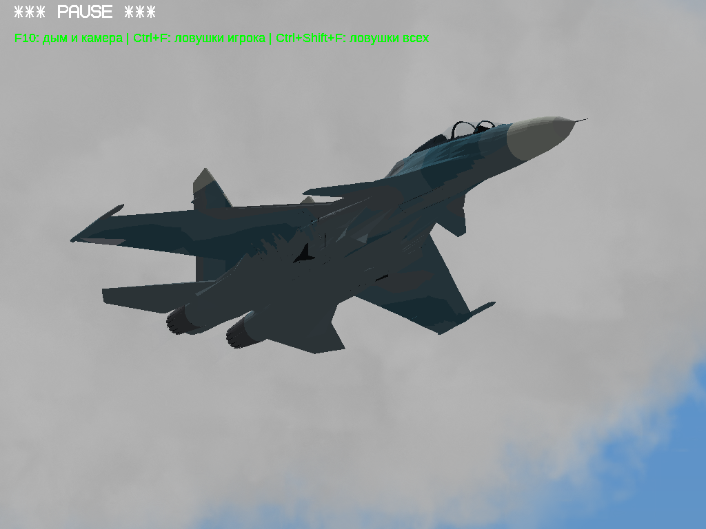
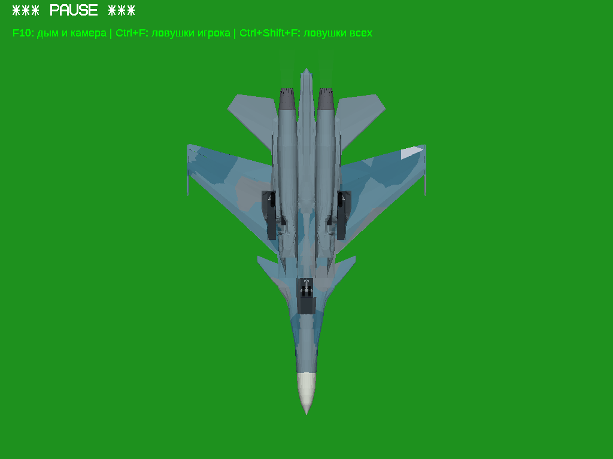
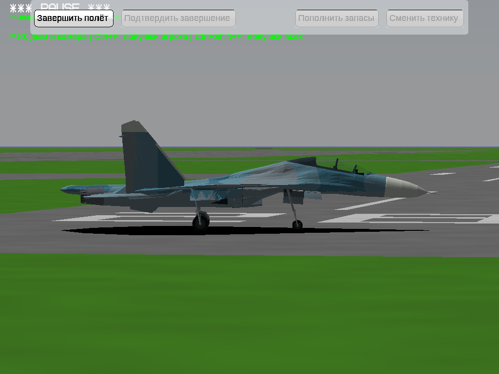
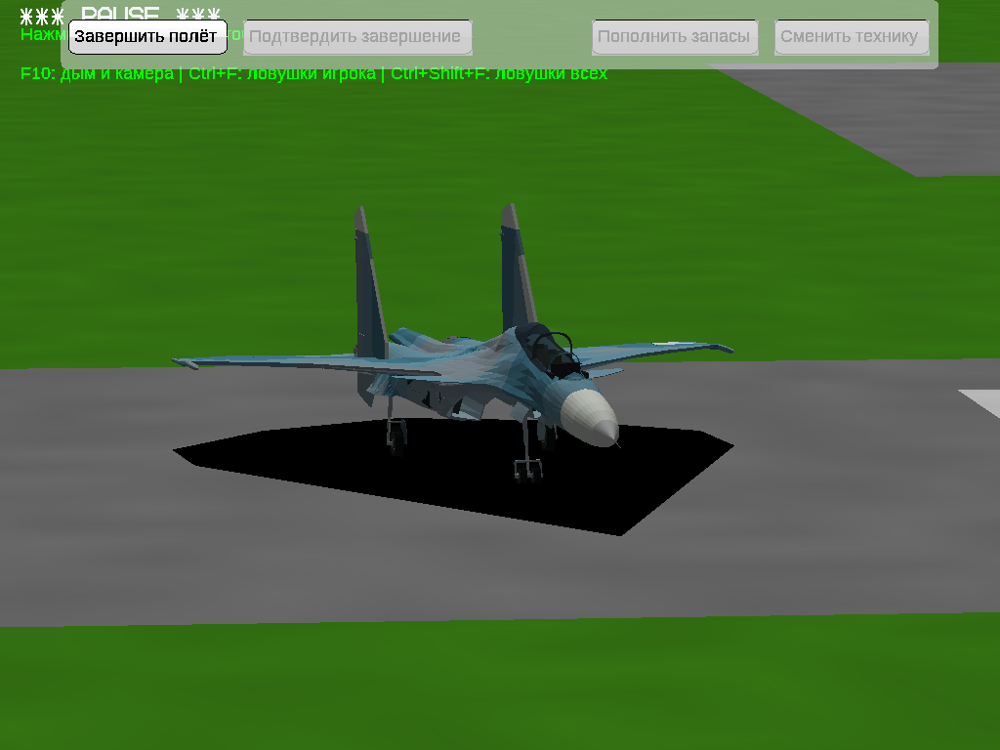